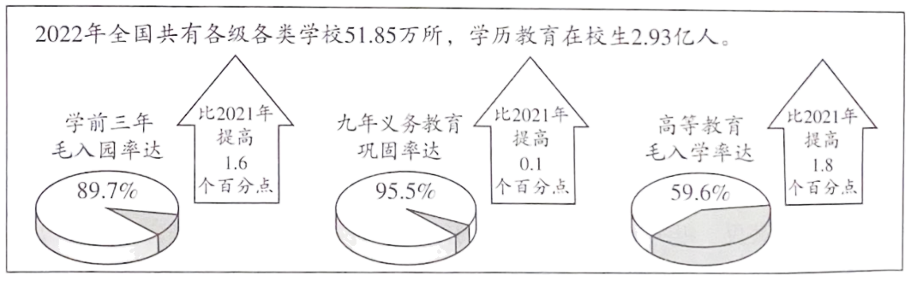
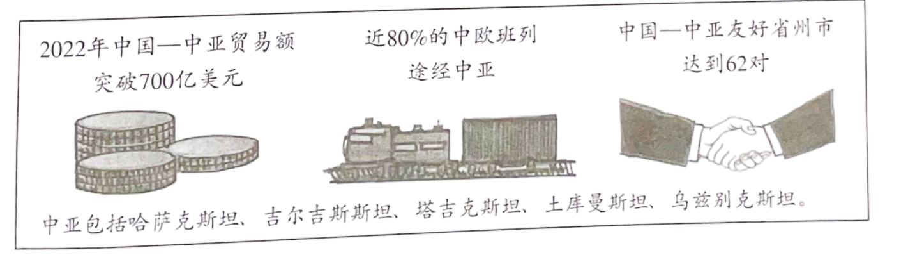

2023年北京市中考政治真题 · 选择题 第11、12、13、14、15题
11. 能用于手机的超薄柔性可折叠玻璃，厚度仅为A4纸的四分之一；普通手机可直连北斗卫星发信息，解决“不在服务区”难题；180千瓦高效率氢燃料电池发动机系统性能卓越，其电池寿命超过3万小时，是行业均值的两倍……我国在2023中关村论坛上发布的这些科技成果说明（ ）
①创新让生活更美好 ②创新要敢于打破常规，一味追求独特
③我国科技创新能力增强 ④创新是促进人的全面发展的根本途径
A ①③B. ①④C. ②③D. ②④
①③B. ①④C. ②③D. ②④
12. 建设教育强国是全面建成社会主义现代化强国的战略先导。上图是2022年我国教育事业发展取得的成绩单，由此可推断出（ ）

A. 教育是决定当代中国命运的关键抉择
B. 我国发展更加公平更高质量的教育
C. 我国各级各类学校数量有所增加
D. 我国建成全民终身学习的现代教育体系
13. 赤红色的忠诚热烈、鲜橙色的温暖活力、琉璃黄的庄重典雅……北京市文化和旅游局推出“漫步北京一五一假期七彩缤纷游”线路，部分线路如下。
线路1 | 天坛公园—中山公园—景山公园—北海公园—颐和园—圆明园 |
线路2 | 北京大学红楼—《新青年》编辑部旧址—中山公园来今雨轩—蒙藏学校旧址—李大钊故居 |
线路3 | 清华园火车站—颐和园益寿堂—中共中央香山驻地旧址—香山革命纪念馆 |
线路4 | 国家体育场—国家游泳中心—国家速滑馆—奥林匹克森林公园—奥林匹克塔—首钢滑雪大跳台 |
如果有同学只想体验“赤红色的忠诚热烈”，你应该推荐（ ）
A 线路1或线路2B. 线路1或线路4
C. 线路2或线路3D. 线路3或线路4
14. 带领学生研学旅行的指导师，帮助你“收拾心情”的整理收纳师，负责民宿管理的民宿管家，数字经济发展中催生的数据分析师、人工智能训练师、农业数字化技术员……这些灵活性较强、自由度较高的新职业受到越来越多年轻人的青睐。这表明（ ）
①兴趣往往需要在实践中发现、培养
②丰富的职业选择给我们带来了挑战
③职业选择愈加丰富，发展空间愈加广阔
④新职业的出现适应了社会发展的需要
A. ①②B. ①④C. ②③D. ③④
15. 中国与中亚五国是友好邻邦。

上图表明（ ）
①多样的文化让世界变得更加绚丽多姿 ②中国积极推动人类命运共同体建设
③中国与中亚五国务实合作、互利共赢 ④中国主动化解世界各种难题与危机
A. ①②B. ①④C. ②③D. ③④